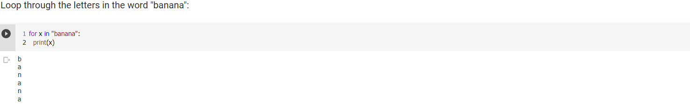
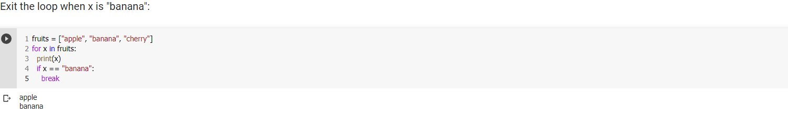
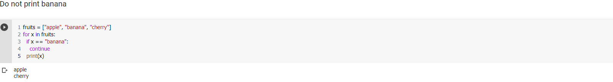
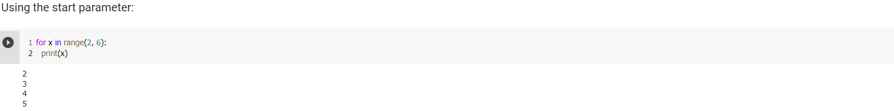
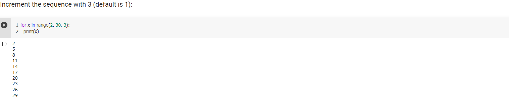
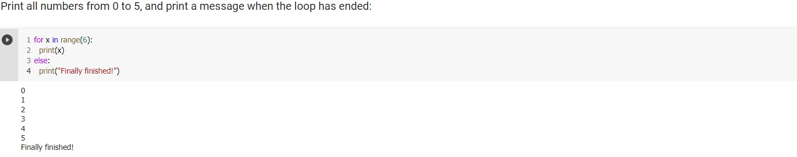

Repetition While For
Repetition StructureThis code is one long sequence structure containing a lot of duplicated code.
Theare are several disadvantage to this approach, including the follow:
- The duaplicated code makes the program large.
- Writing a long sequence of statements can be time consuming
- If part of the duplicatedad code has to be corrected or changed then the correction or change has to be done many times
- Repetition statements are called loops, and are used to repeat the same code multiple times in succession.
- Python has two types of loops: Condition-Controlled and Count-Controlled
- Condition-Controlled loop uses a true/false condition to control the number of times that it repeats - while. Basic syntax:
while Loop - A condition-controlled loop
A condition-controlled loop causes a statement or set of statements to repeat as long as a condition is true. In Python you use the while statement to write a condition-controlled loop.
Looping Through a StringEven strings are iterable objects, they contain a sequence of characters:
The break StatementWith the break statement we can stop the loop before it has looped through all the items:
The continue StatementWith the continue statement we can stop the current iteration of the loop, and continue with the next:
The range() FunctionTo loop through a set of code a specified number of times, we can use the range() function, The range() function returns a sequence of numbers, starting from 0 by default, and increments by 1 (by default), and ends at a specified number.
Nested LoopsA nested loop is a loop inside a loop.
The "inner loop" will be executed one time for each iteration of the "outer loop":
for Loop - A count-controlled loop
A condition-controlled loop causes a statement or set of statements to repeat as long as a condition is true. In Python you use the while statement to write a condition-controlled loop.
A for loop is used for iterating over a sequence (that is either a list, a tuple, a dictionary, a set, or a string).
This is less like the for keyword in other programming languages, and works more like an iterator method as found in other object-orientated programming languages.
With the for loop we can execute a set of statements, once for each item in a list, tuple, set etc.
The for loop does not require an indexing variable to set beforehand.
Looping Through a StringEven strings are iterable objects, they contain a sequence of characters:
 The break StatementWith the break statement we can stop the loop before it has looped through all the items:
 The continue StatementWith the continue statement we can stop the current iteration of the loop, and continue with the next:
 The range() FunctionTo loop through a set of code a specified number of times, we can use the range() function,
The range() function returns a sequence of numbers, starting from 0 by default, and increments by 1 (by default), and ends at a specified number.
The range() function defaults to 0 as a starting value, however it is possible to specify the starting value by adding a parameter: range(2, 6), which means values from 2 to 6 (but not including 6):
The range() function defaults to increment the sequence by 1, however it is possible to specify the increment value by adding a third parameter: range(2, 30, 3):
 Else in For loopThe else keyword in a for loop specifies a block of code to be executed when the loop is finished:
 Nested LoopsA nested loop is a loop inside a loop.
The "inner loop" will be executed one time for each iteration of the "outer loop":
for loops cannot be empty, but if you for some reason have a for loop with no content, put in the pass statement to avoid getting an error.
Sentinal
A sentinel is a special value that marks the end of a sequence of values.
- Simply arsk the user, st the end of each loop iteration, if there is another value to process.
If the sequence of values is long, however, asking this question at the end of each loop iteration might make the program cumbersome for the user. - Ask the user at the beginning of the program how many items are in the sequence.
This might also inconveninece the user, however.If the sequence is very long is very long, and the user doews not know the number of items it contains, it will require the user to count them.
Input Valiadation is the process of inspective data that has been input to a program,to make sure it is valis before it is used in a computation.
Input Valiadation is commonly done with a loop that iterates as long as an input variable references bad data